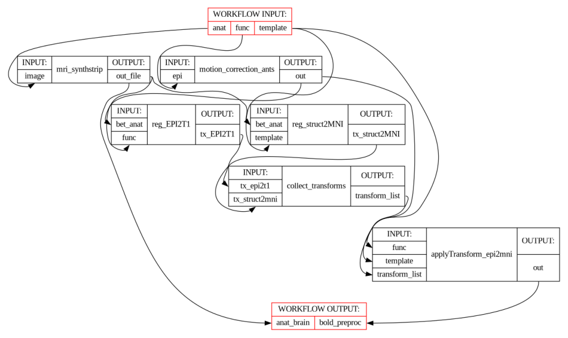
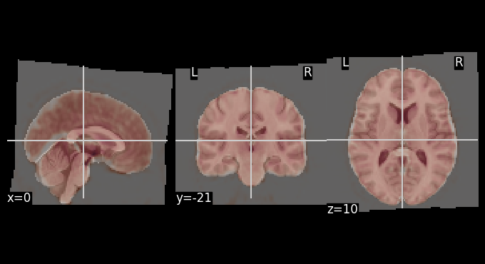
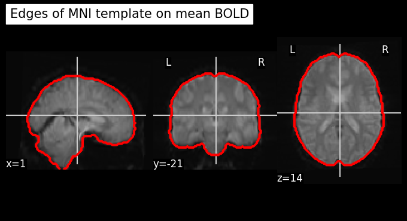

Pydra#
Registration Workflow with ANTsPy and FreeSurfer’s SynthStrip#
Author: Monika Doerig
Date: 2 Sep 2025
License:
Note: If this notebook uses neuroimaging tools from Neurocontainers, those tools retain their original licenses. Please see Neurodesk citation guidelines for details.
Citation and Resources:#
Tools included in this workflow#
Pydra:
Jarecka, D., Goncalves, M., Markiewicz, C. J., Esteban, O., Lo, N., Kaczmarzyk, J., Cali, R., Herholz, P., Nielson, D. M., Mentch, J., Nijholt, B., Johnson, C. E., Wigger, J., Close, T. G., Vaillant, G., Agarwal, A., & Ghosh, S. (2025). nipype/pydra: 1.0a2 (1.0a2). Zenodo. https://doi.org/10.5281/zenodo.16671149
 nipype/pydra
nipype/pydraANTsPy:
stnava, Philip Cook, Nick Tustison, Ravnoor Singh Gill, John Muschelli, Jennings Zhang, Daniel Gomez, Andrew Berger, Thiago Franco de Moraes, Stephen Ogier, Asaph Zylbertal, Dean Rance, Pradeep Reddy Raamana, Vasco Diogo, sai8951, Bryn Lloyd, Dženan Zukić, Evert de Man, KYY, … Tommaso Di Noto. (2025). ANTsX/ANTsPy: Aiouea (v0.6.1). Zenodo. https://doi.org/10.5281/zenodo.15742355
Tustison, N.J., Cook, P.A., Holbrook, A.J. et al. The ANTsX ecosystem for quantitative biological and medical imaging. Sci Rep 11, 9068 (2021). https://doi.org/10.1038/s41598-021-87564-6
SynthStrip:
SynthStrip: Skull-Stripping for Any Brain Image; Andrew Hoopes, Jocelyn S. Mora, Adrian V. Dalca, Bruce Fischl*, Malte Hoffmann* (*equal contribution); NeuroImage 260, 2022, 119474; https://doi.org/10.1016/j.neuroimage.2022.119474
Boosting skull-stripping performance for pediatric brain images; William Kelley, Nathan Ngo, Adrian V. Dalca, Bruce Fischl, Lilla Zöllei*, Malte Hoffmann* (*equal contribution); IEEE International Symposium on Biomedical Imaging (ISBI), 2024, forthcoming; https://arxiv.org/abs/2402.16634
Dataset#
Opensource Data from OpenNeuro:
Kelly AMC and Uddin LQ and Biswal BB and Castellanos FX and Milham MP (2018). Flanker task (event-related). OpenNeuro Dataset ds000102
Kelly, A.M., Uddin, L.Q., Biswal, B.B., Castellanos, F.X., Milham, M.P. (2008). Competition between functional brain networks mediates behavioral variability. Neuroimage, 39(1):527-37
Installation and Import#
%%capture
! pip install pydra==1.0a7 antspyx==0.6.1 nilearn==0.13.1 nibabel==5.3.3
from pathlib import Path
from pydra.compose import python, workflow, shell
from pydra.engine.submitter import Submitter
from pydra.utils import show_workflow, print_help
import pydra.utils.general
import shutil
from os.path import join as opj
import os
import ants
import numpy as np
import nibabel as nib
from nilearn.datasets import load_mni152_template
from nilearn import plotting, image
from nilearn.image import math_img
import typing as ty
from fileformats.generic import File
import nest_asyncio
# Needed to allow asynchronous execution in Jupyter notebooks
nest_asyncio.apply()
import module
await module.load('freesurfer/8.1.0')
await module.list()
['freesurfer/8.1.0']
Introduction Pydra#
Pydra is a lightweight, Python-based dataflow engine designed to build reproducible, scalable, and robust workflows. While it was created to succeed Nipype for neuroimaging applications, Pydra is flexible enough to support analytic pipelines in any scientific domain. It allows you to combine tasks implemented as Python functions or shell commands into coherent workflows that can be executed reliably across different computing environments.
Key features include:
Combining diverse tasks into robust workflows.
Dynamic workflow construction using standard Python code.
Concurrent execution on local workstations or HPC clusters (SLURM, SGE, Dask, etc.).
Map-reduce-style parallelism via
split()andcombine().Global caching to avoid unnecessary recomputation.
Support for executing tasks in separate software environments (e.g., containers).
Strong type-checking of inputs and outputs, including specialized file formats.
Overview of the Preprocessing Workflow#
In this notebook, we demonstrate a neuroimaging registration workflow built with Pydra. The workflow uses:
Python tasks unsing
ANTsPyfor operations implemented directly in Python.Shell task to wrap FreeSurfer’s command-line tool
SynthStripfor skull-stripping.A workflow that orchestrates multiple tasks, connecting inputs and outputs.
Splitting to process multiple functional runs in parallel.
A Submitter object to to initiate the task execution for a richer Result object
Concurrent execution using the
cf(ConcurrentFutures) worker.
1. Download of Data#
One Subject from the Flanker Dataset from OpenNeuro#
!datalad install https://github.com/OpenNeuroDatasets/ds000102.git
!cd ds000102 && datalad get sub-01
Cloning: 0%| | 0.00/2.00 [00:00<?, ? candidates/s]
Enumerating: 0.00 Objects [00:00, ? Objects/s]
Counting: 0%| | 0.00/27.0 [00:00<?, ? Objects/s]
Compressing: 0%| | 0.00/23.0 [00:00<?, ? Objects/s]
Receiving: 0%| | 0.00/2.15k [00:00<?, ? Objects/s]
Resolving: 0%| | 0.00/537 [00:00<?, ? Deltas/s]
[INFO ] Remote origin not usable by git-annex; setting annex-ignore
[INFO ] https://github.com/OpenNeuroDatasets/ds000102.git/config download failed: Not Found
[INFO ] Remote origin not usable by git-annex; setting annex-ignore
[INFO ] https://github.com/OpenNeuroDatasets/ds000102.git/config download failed: Not Found
[INFO ] access to 1 dataset sibling s3-PRIVATE not auto-enabled, enable with:
| datalad siblings -d "/home/jovyan/workspace/books/examples/workflows/ds000102" enable -s s3-PRIVATE
install(ok): /home/jovyan/workspace/books/examples/workflows/ds000102 (dataset)
Total: 0%| | 0.00/66.8M [00:00<?, ? Bytes/s]
Total: 0%| | 16.4k/66.8M [00:01<?, ? Bytes/s]
Get sub-01/a .. 1_T1w.nii.gz: 0%| | 33.3k/10.6M [00:00<02:06, 83.6k Bytes/s]
Get sub-01/a .. 1_T1w.nii.gz: 1%| | 68.2k/10.6M [00:00<01:17, 135k Bytes/s]
Total: 0%| | 173k/66.8M [00:01<12:09, 91.4k Bytes/s]
Get sub-01/a .. 1_T1w.nii.gz: 3%|▏ | 347k/10.6M [00:00<00:19, 524k Bytes/s]
Get sub-01/a .. 1_T1w.nii.gz: 7%|▎ | 695k/10.6M [00:00<00:09, 1.05M Bytes/s]
Total: 2%|▌ | 1.43M/66.8M [00:02<01:47, 608k Bytes/s]
Get sub-01/a .. 1_T1w.nii.gz: 27%|▊ | 2.87M/10.6M [00:01<00:02, 3.50M Bytes/s]
Get sub-01/a .. 1_T1w.nii.gz: 54%|█▋ | 5.74M/10.6M [00:01<00:00, 6.84M Bytes/s]
Total: 14%|███▋ | 9.50M/66.8M [00:02<00:17, 3.23M Bytes/s]
Get sub-01/a .. 1_T1w.nii.gz: 100%|███████████| 10.6M/10.6M [00:00<?, ? Bytes/s]
Get sub-01/f .. _bold.nii.gz: 0%| | 16.4k/28.1M [00:00<?, ? Bytes/s]
Get sub-01/f .. _bold.nii.gz: 13%|▍ | 3.75M/28.1M [00:00<00:00, 25.3M Bytes/s]
Get sub-01/f .. _bold.nii.gz: 24%|▋ | 6.83M/28.1M [00:00<00:00, 27.9M Bytes/s]
Get sub-01/f .. _bold.nii.gz: 39%|█▏ | 11.1M/28.1M [00:00<00:01, 16.3M Bytes/s]
Total: 38%|█████████▊ | 25.3M/66.8M [00:04<00:06, 6.05M Bytes/s]
Get sub-01/f .. _bold.nii.gz: 66%|█▉ | 18.4M/28.1M [00:01<00:00, 17.3M Bytes/s]
Get sub-01/f .. _bold.nii.gz: 79%|██▎| 22.1M/28.1M [00:01<00:00, 19.9M Bytes/s]
Get sub-01/f .. _bold.nii.gz: 92%|██▊| 25.7M/28.1M [00:01<00:00, 17.1M Bytes/s]
Get sub-01/f .. _bold.nii.gz: 100%|███████████| 28.1M/28.1M [00:00<?, ? Bytes/s]
Get sub-01/f .. _bold.nii.gz: 0%| | 16.4k/28.1M [00:00<?, ? Bytes/s]
Get sub-01/f .. _bold.nii.gz: 13%|▍ | 3.76M/28.1M [00:00<00:01, 18.3M Bytes/s]
Get sub-01/f .. _bold.nii.gz: 25%|▊ | 7.06M/28.1M [00:00<00:00, 24.3M Bytes/s]
Total: 72%|██████████████████▊ | 48.2M/66.8M [00:05<00:02, 8.24M Bytes/s]
Get sub-01/f .. _bold.nii.gz: 40%|█▏ | 11.2M/28.1M [00:00<00:00, 17.3M Bytes/s]
Get sub-01/f .. _bold.nii.gz: 53%|█▌ | 14.9M/28.1M [00:00<00:00, 17.7M Bytes/s]
Get sub-01/f .. _bold.nii.gz: 66%|█▉ | 18.6M/28.1M [00:01<00:00, 17.8M Bytes/s]
Get sub-01/f .. _bold.nii.gz: 79%|██▎| 22.2M/28.1M [00:01<00:00, 17.8M Bytes/s]
Get sub-01/f .. _bold.nii.gz: 93%|██▊| 26.3M/28.1M [00:01<00:00, 17.6M Bytes/s]
Get sub-01/f .. _bold.nii.gz: 100%|███████████| 28.1M/28.1M [00:00<?, ? Bytes/s]
get(ok): sub-01/anat/sub-01_T1w.nii.gz (file) [from s3-PUBLIC...]
get(ok): sub-01/func/sub-01_task-flanker_run-1_bold.nii.gz (file) [from s3-PUBLIC...]
get(ok): sub-01/func/sub-01_task-flanker_run-2_bold.nii.gz (file) [from s3-PUBLIC...]
get(ok): sub-01 (directory)
action summary:
get (ok: 4)
MNI template from Nilearn#
mni_template = load_mni152_template(resolution=2)
nib.save(mni_template, './mni_template.nii.gz')
temp = Path('./mni_template.nii.gz')
template = temp.resolve() # returns absolute path
print(template)
/home/jovyan/workspace/books/examples/workflows/mni_template.nii.gz
2. Pydra Tasks#
The basic runnable component of Pydra is a task. Tasks are conceptually similar to functions, in that they take inputs, operate on them and then return results. However, unlike standard functions, tasks are parameterized before execution in a separate step. This separation enables parameterized tasks to be linked together into workflows that can be validated for errors before execution, while allowing modular execution workers and environments to be specified independently of the task being performed.
Tasks can encapsulate Python functions or shell-commands, or be multi-component workflows themselves, constructed from task components including nested workflows.
2.1. Python Tasks#
Python tasks are Python functions that are parameterized before they are executed or added to a workflow. This approach provides several advantages over direct function calls, including input validation, output tracking, and seamless integration into larger computational workflows.
Define decorator#
The simplest way to define a Python task is to decorate a function with pydra.compose.python.define.
This neuroimaging registration pipeline demonstrates this approach by creating five specialized Python tasks with ANTsPy that handle different aspects of fMRI data processing:
Motion correction task - Corrects for head movement by registering all volumes to a reference timepoint
Structural-to-MNI registration task - Registers the T1-weighted anatomical image to MNI standard space
Functional-to-structural registration task - Registers the reference functional volume to the skull-stripped T1 image
Transform combination task - Concatenates the transformation matrices in the proper order for ANTs
Transform application task - Applies the combined transformations to register the motion-corrected functional data to MNI space
# Motion correction of BOLD images
@python.define
def motion_correction_ants(epi):
cwd = os.getcwd()
new_filename = Path(epi).name.replace('.nii.gz', '_mc.nii.gz') #new file ending for output file
out_path = opj(cwd, new_filename)
epi_path = str(epi) #make sure it's string
epi_img = ants.image_read(epi_path)
# Split into list of 3D volumes
volumes = ants.ndimage_to_list(epi_img)
# Pick reference volume (middle timepoint)
ref_vol = volumes[len(volumes) // 2]
# Motion correct each volume
motion_corrected = []
for i, vol in enumerate(volumes):
reg = ants.registration(fixed=ref_vol, moving=vol, type_of_transform="Rigid")
motion_corrected.append(reg["warpedmovout"])
# Recombine into 4D
epi_corrected = ants.list_to_ndimage(epi_img, motion_corrected)
ants.image_write(epi_corrected, out_path)
return out_path
# Register BOLD to T1w
@python.define(outputs=["tx_EPI2T1", "warpedmovout"])
def reg_EPI2T1(bet_anat, func):
cwd = os.getcwd()
bet_anat_path = str(bet_anat)
# Load 4D fMRI
img = nib.load(func)
data = img.get_fdata()
# Get the middle volume
n_timepoints = data.shape[3]
middle_timepoint = n_timepoints // 2
middle_vol = data[:, :, :, middle_timepoint]
# Save
ref_img = nib.Nifti1Image(middle_vol, img.affine, img.header)
ref_path = opj(cwd, "bold_ref.nii.gz")
nib.save(ref_img, ref_path)
tx_EPI2T1= ants.registration(fixed=ants.image_read(bet_anat_path),
moving=ants.image_read(ref_path),
random_seed = 0,
type_of_transform = 'SyNBold',
outprefix= opj(os.getcwd(), 'EPI2T1_'))
moved_path = opj(cwd ,'EPI2T1.nii.gz')
ants.image_write(tx_EPI2T1['warpedmovout'], moved_path)
return tx_EPI2T1['fwdtransforms'], moved_path
# Register T1w to MNI
@python.define(outputs=["tx_struct2MNI", "warpedmovout"])
def reg_struct2MNI(template, bet_anat):
bet_anat_path = str(bet_anat)
tx_struct2MNI= ants.registration(fixed=ants.image_read(template),
moving=ants.image_read(str(bet_anat_path)),
random_seed = 0,
type_of_transform = 'SyN', outprefix= opj(os.getcwd(), 'SyN_struct2MNI_'))
moved_path = opj(os.getcwd() ,'T12MNI.nii.gz')
ants.image_write(tx_struct2MNI['warpedmovout'], moved_path)
return (tx_struct2MNI['fwdtransforms'], moved_path)
# Concatenate transformations - last transformation is applied first
@python.define(outputs=["transform_list"])
def collect_transforms(tx_struct2mni, tx_epi2t1):
return tx_struct2mni + tx_epi2t1
# Apply transformations BOLD --> T1, T1 --> MNI; BOLD >> MNI in one step
@python.define
def applyTransform_epi2mni(template, func, transform_list):
cwd = os.getcwd()
new_filename = Path(func).name.replace('_mc.nii.gz', '_mc_mni.nii.gz')
out_path = opj(cwd, new_filename)
func_path = str(func)
mov_epi2mni = ants.apply_transforms(fixed = ants.image_read(template),
moving = ants.image_read(func_path),
transformlist=transform_list,
interpolator='lanczosWindowedSinc', imagetype=3)
file_path_gz = opj(cwd ,out_path)
ants.image_write(mov_epi2mni, file_path_gz)
return file_path_gz
2.2 Shell-tasks#
In Pydra, shell tasks can be defined using command-line style templates, which closely resemble the syntax shown in a tool’s inline help. This approach provides a concise and intuitive way to map a CLI program into a Python task that can be used in workflows.
Key features of the shell tasks:
Input and Outputs:
Fields are enclosed in
< >.Outputs are marked with the
out|prefix (e.g.,<out|out_file:File>).By default, fields are treated as
fileformats.generic.FsObject, but more specific types (e.g.NiftiGz,float,bool) can be specified with:<type>
Flags and Options:
Flags are associated with fields by placing the field after the flag (e.g.,
-i <image:File>).Boolean flags are included only if the value is True, and omitted otherwise (e.g.,
-g<gpu?:bool> "–> optional, and the default isFalse)Options that take a value have the field inserted after the flag (e.g.,
--model <model:File>)
Optional Arguments:
Adding
?after the type marks a field as optional (e.g.,<border:float?>).Optional fields are omitted from the command if not set, allowing the underlying tool to use its own defaults.
Defaults
A default value can be provided after
=(e.g.,<border:float?=1>, which will override the CLI default if desired)Defaults allow tasks to run without explicitly setting every argument.
Path Templates for Outputs:
By default, output fields are assigned a
path_templatederived from the field name and extension (e.g.,out_file.gz).You can override this default filename using
$followed by a filename (e.g.,<out|mask_file:File$brain_mask.nii.gz>).The auto-generated filename will be used unless the user provides an explicit path when initializing the task.
We will create SynthStrip shell task by wrapping FreeSurfer’s mri_synthstrip skull-stripping tool. Let’s first look at the help page:
! mri_synthstrip --help
usage: mri_synthstrip [-h] -i FILE [-o FILE] [-m FILE] [-d FILE] [-g]
[-b BORDER] [-t THREADS] [--no-csf] [--model FILE]
Robust, universal skull-stripping for brain images of any type.
optional arguments:
-h, --help show this help message and exit
-i FILE, --image FILE
input image to skullstrip
-o FILE, --out FILE save stripped image to file
-m FILE, --mask FILE save binary brain mask to file
-d FILE, --sdt FILE save distance transform to file
-g, --gpu use the GPU
-b BORDER, --border BORDER
mask border threshold in mm, defaults to 1
-t THREADS, --threads THREADS
PyTorch CPU threads, PyTorch default if unset
--no-csf exclude CSF from brain border
--model FILE alternative model weights
If you use SynthStrip in your analysis, please cite:
----------------------------------------------------
SynthStrip: Skull-Stripping for Any Brain Image
A Hoopes, JS Mora, AV Dalca, B Fischl, M Hoffmann
NeuroImage 206 (2022), 119474
https://doi.org/10.1016/j.neuroimage.2022.119474
Website: https://synthstrip.io
#
The SynthStrip tool for robust skull-stripping can be expressed as shell task in just a few lines using this syntax:
SynthStrip = shell.define(
"mri_synthstrip "
"-i <image:File> "
"-o <out|out_file:File$brain_stripped.nii.gz> "
"-m <out|mask_file:File$brain_mask.nii.gz> "
"-g<gpu?:bool> "
"--no-csf<no_csf?:bool> "
"-b <border:float?> " # CLI uses its default (1 mm)
"--model <model:file?>"
)
print_help(SynthStrip)
------------------------------------
Help for Shell task 'mri_synthstrip'
------------------------------------
Inputs:
- executable: str | Sequence[str]; default = 'mri_synthstrip'
the first part of the command, can be a string, e.g. 'ls', or a list, e.g.
['ls', '-l', 'dirname']
- image: generic/file ('-i')
- out_file: Path | bool; default = True ('-o')
The path specified for the output file, if True, the default 'path
template' will be used.
- mask_file: Path | bool; default = True ('-m')
The path specified for the output file, if True, the default 'path
template' will be used.
- border: float | None; default = None ('-b')
- model: generic/file | None; default = None ('--model')
- append_args: list[str | generic/file]; default-factory = list()
Additional free-form arguments to append to the end of the command.
Outputs:
- out_file: generic/file
- mask_file: generic/file
- return_code: int
The process' exit code.
- stdout: str
The standard output stream produced by the command.
- stderr: str
The standard error stream produced by the command.
3.3. Workflow#

In Pydra, workflows represent directed acyclic graphs (DAGs) of tasks, where individual tasks are connected through their inputs and outputs to form complex computational pipelines. Like tasks, workflows are defined as dataclasses, but instead of performing computations themselves, they orchestrate the execution of multiple interconnected components.
Workflows are defined using the @workflow.define decorator applied to a constructor function, which specifies how tasks should be connected and executed. Within the constructor function, individual tasks are added to the workflow using workflow.add(). This returns an outputs object, whose fields serve as placeholders for the task’s eventual results. These placeholders can then be used as inputs to downstream tasks, establishing the dependencies that determine the workflow’s execution order. The workflow itself returns its specified outputs as a tuple once all tasks have completed.
In our preprocessing pipeline, we’ll demonstrate how to combine our Python tasks (motion correction, registration, and transformation) with our shell task (skull stripping) into a cohesive workflow that processes functional MRI data from raw acquisition to standardized space registration.
@workflow.define(outputs=["anat_brain", "bold_preproc"])
def PreprocWorkflow(anat: str, func: str, template: str) -> ty.Tuple[File, File]:
# Brain extraction
synth_strip_task = workflow.add(SynthStrip(
image=anat))
# Register T1w to MNI
struct2MNI_task = workflow.add(reg_struct2MNI(template=template,
bet_anat=synth_strip_task.out_file))
# Motion Correction
mc_task = workflow.add(motion_correction_ants(epi = func))
# Register ref EPI to T1w -->tx_EPI2T1
epi2T1_task = workflow.add(reg_EPI2T1(bet_anat=synth_strip_task.out_file,
func=mc_task.out))
# Merge transformations
merge_transforms = workflow.add(collect_transforms(tx_struct2mni=struct2MNI_task.tx_struct2MNI,
tx_epi2t1=epi2T1_task.tx_EPI2T1))
# Resample func to mni
apply_transform = workflow.add(applyTransform_epi2mni(template=template,
func = mc_task.out,
transform_list = merge_transforms.transform_list))
return synth_strip_task.out_file, apply_transform.out
print_help(PreprocWorkflow)
----------------------------------------
Help for Workflow task 'PreprocWorkflow'
----------------------------------------
Inputs:
- anat: str
- func: str
- template: str
- constructor: Callable[]; default = PreprocWorkflow()
Outputs:
- anat_brain: generic/file
- bold_preproc: generic/file
Pydra workflows support splitting inputs across multiple tasks using the split() method. This is particularly useful in neuroimaging pipelines, where the same preprocessing steps need to be applied to multiple subjects, sessions, or runs. For example, a workflow can be executed over every NIfTI file in a directory by splitting the workflow’s input over the set of files. If the outputs are not combined with combine(), the splits will automatically propagate to downstream nodes.
func_run_dir = Path('./ds000102/sub-01/func').resolve()
anat_sub_01 = Path('./ds000102/sub-01/anat/sub-01_T1w.nii.gz').resolve()
wf_preproc = PreprocWorkflow(anat= anat_sub_01,
template=template
).split(func=(f for f in func_run_dir.iterdir() if f.name.endswith(".nii.gz"))) #only nifti files, ignore json files
result_wf = wf_preproc()
result_wf
SplitOutputs(anat_brain=[File('/home/jovyan/.cache/pydra/1.0a7/run-cache/workflow-04b8e9d8003cb1067a181c22a82517f1/brain_stripped.nii.gz'), File('/home/jovyan/.cache/pydra/1.0a7/run-cache/workflow-04b8e9d8003cb1067a181c22a82517f1/brain_stripped.nii (1).gz')], bold_preproc=[File('/home/jovyan/.cache/pydra/1.0a7/run-cache/workflow-04b8e9d8003cb1067a181c22a82517f1/sub-01_task-flanker_run-1_bold_mc_mni.nii.gz'), File('/home/jovyan/.cache/pydra/1.0a7/run-cache/workflow-04b8e9d8003cb1067a181c22a82517f1/sub-01_task-flanker_run-2_bold_mc_mni.nii.gz')])
3. Submitter#
If you want to access a richer Result object you can use a Submitter object to initiate the task execution.
The Result object contains:
output: the outputs of the task (if there is only one output it is called out by default)
runtime: information about the peak memory and CPU usage
errored: the error status of the task
task: the task object that generated the results
cache_dir: the output directory the results are stored in
shutil.rmtree(pydra.utils.general.default_run_cache_root) # Clear previous workflow results so we can showcase execution again
wf_sub = PreprocWorkflow(anat= anat_sub_01,
template=template
).split(func=(f for f in func_run_dir.iterdir() if f.name.endswith(".nii.gz")))
with Submitter() as sub:
result_sub = sub(wf_sub)
result_sub.task
Split(defn=PreprocWorkflow(anat='/home/jovyan/workspace/books/examples/workflows/ds000102/.git/annex/objects/Pf/6k/MD5E-s10581116--757e697a01eeea5c97a7d6fbc7153373.nii.gz/MD5E-s10581116--757e697a01eeea5c97a7d6fbc7153373.nii.gz', func=StateArray('/home/jovyan/workspace/books/examples/workflows/ds000102/sub-01/func/sub-01_task-flanker_run-1_bold.nii.gz', '/home/jovyan/workspace/books/examples/workflows/ds000102/sub-01/func/sub-01_task-flanker_run-2_bold.nii.gz'), template='/home/jovyan/workspace/books/examples/workflows/mni_template.nii.gz', constructor=<function PreprocWorkflow at 0x73fe6e53df80>), output_types={'anat_brain': out(name='anat_brain', type=list[fileformats.generic.file.File], default=NO_DEFAULT, help='', requires=[], converter=None, validator=None, hash_eq=False), 'bold_preproc': out(name='bold_preproc', type=list[fileformats.generic.file.File], default=NO_DEFAULT, help='', requires=[], converter=None, validator=None, hash_eq=False)}, environment=Native())
result_sub.cache_dir
PosixPath('/home/jovyan/.cache/pydra/1.0a7/run-cache/workflow-04b8e9d8003cb1067a181c22a82517f1')
result_sub.outputs
SplitOutputs(anat_brain=[File('/home/jovyan/.cache/pydra/1.0a7/run-cache/workflow-04b8e9d8003cb1067a181c22a82517f1/brain_stripped.nii.gz'), File('/home/jovyan/.cache/pydra/1.0a7/run-cache/workflow-04b8e9d8003cb1067a181c22a82517f1/brain_stripped.nii (1).gz')], bold_preproc=[File('/home/jovyan/.cache/pydra/1.0a7/run-cache/workflow-04b8e9d8003cb1067a181c22a82517f1/sub-01_task-flanker_run-1_bold_mc_mni.nii.gz'), File('/home/jovyan/.cache/pydra/1.0a7/run-cache/workflow-04b8e9d8003cb1067a181c22a82517f1/sub-01_task-flanker_run-2_bold_mc_mni.nii.gz')])
4. Executing tasks in parallel#
Workers#
Pydra allows tasks to be executed in parallel using different workers. The default is the debug worker, which runs tasks serially in a single process; useful for debugging but not optimal for production.
For local parallel execution, the cf (ConcurrentFutures) worker can spread tasks across multiple CPU cores for better efficiency. On HPC clusters, SLURM, SGE, and PSI/J workers can submit workflow nodes as separate jobs to the scheduler. There is also an experimental Dask worker with multiple backend options.
Workers can be specified by string or by class, and additional parameters (e.g., n_procs=2) can be passed at execution.
When running multi-process code in a Python script, the workflow execution should be enclosed in an if name == “main”: block to prevent the worker processes from re-executing the top-level script.
This guard is not required when running inside a Jupyter Notebook.
shutil.rmtree(pydra.utils.general.default_run_cache_root) # Clear previous workflow results so we can showcase execution
# Use this block when calling multi-process code in a top level script
# if __name__ == "__main__":
# Use the 'cf' worker to run tasks concurrently
wf_parallel=PreprocWorkflow(anat= anat_sub_01,
template=template
).split(func=(f for f in func_run_dir.iterdir() if f.name.endswith(".nii.gz")))
result_parallel = wf_parallel(worker="cf", n_procs=2) # <-- Select the "cf" worker here
result_parallel
SplitOutputs(anat_brain=[File('/home/jovyan/.cache/pydra/1.0a7/run-cache/workflow-04b8e9d8003cb1067a181c22a82517f1/brain_stripped.nii.gz'), File('/home/jovyan/.cache/pydra/1.0a7/run-cache/workflow-04b8e9d8003cb1067a181c22a82517f1/brain_stripped.nii (1).gz')], bold_preproc=[File('/home/jovyan/.cache/pydra/1.0a7/run-cache/workflow-04b8e9d8003cb1067a181c22a82517f1/sub-01_task-flanker_run-1_bold_mc_mni.nii.gz'), File('/home/jovyan/.cache/pydra/1.0a7/run-cache/workflow-04b8e9d8003cb1067a181c22a82517f1/sub-01_task-flanker_run-2_bold_mc_mni.nii.gz')])
5. Visualizing Results#
Workflow overview: tasks, inputs, and outputs#
The figure below shows the full workflow execution graph, including all tasks, their inputs, and outputs. This provides a visual overview of the data flow and dependencies across the preprocessing steps.
show_workflow(PreprocWorkflow, plot_type="detailed", figsize=(12, 8))

Functional registration to MNI space#
The mean BOLD image after motion correction was registered to the MNI template. The overlays below allows for visual inspection of alignment quality.
# Get mean BOLD image
mean_bold = image.mean_img(result_parallel.bold_preproc[0], copy_header=True)
# Overlay of the mean bold image on MNI background template
plotting.plot_stat_map(stat_map_img=mean_bold,
bg_img=template,
transparency=0.4,
colorbar=False)
<nilearn.plotting.displays._slicers.OrthoSlicer at 0x73fe6e196900>

Let’s use add_contours as another visualization option for checking coregistration by overlaying the MNI template as contour (red) on top of mean functional image (background):
# Create a binary mask of the template
template_mask = math_img("img > 0.1", img=template)
display = plotting.plot_anat(mean_bold, title="Edges of MNI template on mean BOLD", colorbar=False)
display.add_contours(template_mask, colors='r')

Dependencies in Jupyter/Python#
Using the package watermark to document system environment and software versions used in this notebook, alongside the Neurodesktop version extracted from the
JUPYTER_IMAGEorNEURODESKTOP_VERSIONenvironment variables.
import os
%load_ext watermark
%watermark
%watermark --iversions
neurodesktop_version = (
os.environ.get('JUPYTER_IMAGE', '').split(':')[-1] or
os.environ.get('NEURODESKTOP_VERSION', 'unknown')
)
print(f"Neurodesktop version: {neurodesktop_version}")
Last updated: 2026-07-08T10:02:03.452628+00:00
Python implementation: CPython
Python version : 3.13.13
IPython version : 9.12.0
Compiler : GCC 14.3.0
OS : Linux
Release : 6.8.0-111-generic
Machine : x86_64
Processor : x86_64
CPU cores : 16
Architecture: 64bit
ants : 0.6.1
fileformats : 0.17.6
nest_asyncio: 1.6.0
nibabel : 5.3.3
nilearn : 0.13.1
numpy : 2.4.6
pydra : 1.0a7
Neurodesktop version: 2026-06-04